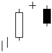

تحلیل تکنیکال
الگوهای کندل استیک ها
الگوهای برگشتی نزولی
Evening Doji Star

ترکیب این الگوی سه شمعی بسیار شبیه به الگوی ستاره عصرگاهی می باشد با این تفاوت که بین شمع اول و دوم به علاوه
بین شمع دوم و سوم شکافی دیده نمی شود شمع اول پرقدرت و صعودی، شمع دوم Doji و شمع سوم دارای بدنه نزولی می
باشد. با بسته شدن نزولی شمع سوم اخطار انتهای روند صعودی و آغاز روند نزولی اعلام می شود.